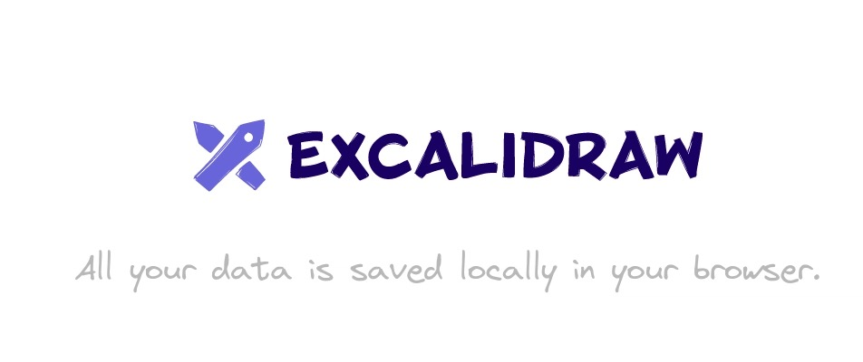

Análise de qualidade do Excalidraw¶

Avaliação de segurança, flexibilidade e capacidade de interação de um quadro branco colaborativo.
Introdução¶
Este site documenta a avaliação da qualidade do Excalidraw, uma aplicação web de quadro branco colaborativo para criação de diagramas, esboços e wireframes. O trabalho é realizado pela equipe Ada Lovelace, na disciplina de Qualidade de Software.
O Excalidraw foi escolhido por combinar edição visual, colaboração em tempo real, compartilhamento de diagramas e recursos de inteligência artificial. A avaliação concentra-se nas características mais relevantes para esse contexto: flexibilidade (portabilidade), segurança e capacidade de interação (usabilidade), conforme a ISO/IEC 25010:2023. Na edição de 2023, a norma utiliza Flexibilidade e Capacidade de interação como os nomes oficiais correspondentes a Portabilidade e Usabilidade.
O estudo adota uma abordagem mista, combinando medições objetivas, inspeção técnica e observação da experiência de uso. Os resultados devem ser interpretados somente para a versão, os ambientes e as funcionalidades efetivamente avaliados; eles não constituem uma certificação integral do produto.
Projeto avaliado¶
- Nome: Excalidraw
- Aplicação: excalidraw.com
- Repositório: github.com/excalidraw/excalidraw
- Tipo de produto: aplicação web de quadro branco colaborativo, de código aberto (licença MIT), instalável como PWA e também distribuída como biblioteca React no npm.
- Descrição: quadro branco colaborativo para criação, edição, exportação e compartilhamento de diagramas, com interação por mouse, teclado e toque.
O Diagrama 1 resume a estrutura do produto. O editor roda inteiro no navegador e depende de serviços externos apenas para colaboração, links compartilháveis e IA. Por isso a avaliação consegue observar o que sai do navegador, mas não o que acontece nos servidores.
flowchart LR
U["Usuário<br/>(mouse, teclado e toque)"]
subgraph NAV["Navegador · excalidraw.com"]
APP["excalidraw-app"]
LIB["@excalidraw/excalidraw<br/>(editor React)"]
PKG["element · math · common · utils"]
LOC["localStorage e IndexedDB"]
APP --> LIB --> PKG
APP --> LOC
end
U --> APP
APP --> COL["Servidor de colaboração"]
APP --> FB["Firebase e json.excalidraw.com<br/>(salas e links)"]
APP --> AI["Serviço de IA"]
classDef mod fill:#6965db1f,stroke:#8884ee
classDef ext fill:transparent,stroke:#9a97b8,stroke-dasharray:4 3
class APP,LIB,PKG,LOC mod
class COL,FB,AI extDiagrama 1. Módulos do Excalidraw e serviços externos. Fonte: elaboração própria a partir do repositório do Excalidraw.
Características e escopo do projeto¶
- Características avaliadas: flexibilidade (portabilidade), segurança e capacidade de interação (usabilidade), conforme a adaptação da ISO/IEC 25010:2023.
- Justificativa das características: segurança é essencial porque os diagramas podem conter informações pessoais, acadêmicas ou profissionais e circulam por meio de links, sessões colaborativas, armazenamento local e, em alguns recursos, serviços externos de inteligência artificial. A análise considera a importância de aplicar os princípios da Lei Geral de Proteção de Dados (LGPD), especialmente finalidade, necessidade, transparência, segurança e prevenção, além de verificar controle de acesso, proteção das comunicações, integridade do conteúdo, autenticidade dos participantes e rastreabilidade das ações. Isso reduz o risco de exposição, alteração ou uso indevido de dados e ajuda a preservar os direitos dos titulares, sem presumir que a avaliação, por si só, certifique conformidade legal. Flexibilidade é relevante porque a aplicação precisa funcionar em diferentes navegadores, sistemas operacionais, resoluções e dispositivos, inclusive celulares e interfaces sensíveis ao toque, além de permitir a migração de diagramas sem perda significativa de conteúdo ou produtividade. Capacidade de interação é necessária para que iniciantes aprendam a ferramenta, usuários experientes trabalhem com eficiência e pessoas com diferentes capacidades consigam operar o sistema, inclusive por teclado ou com tecnologia assistiva, com feedback compreensível e proteção contra a perda acidental de trabalho.
- Escopo: criação e edição de formas, textos, setas e wireframes; interação por mouse, teclado e toque; compartilhamento e colaboração por links; exportação e importação de diagramas; recursos de inteligência artificial; armazenamento local, autenticação observável e proteção das comunicações; e execução em ambientes selecionados.
- Fora do escopo: auditoria completa da infraestrutura de produção, certificação criptográfica formal, teste de penetração invasivo e avaliação exaustiva de todas as funcionalidades do produto.
Integrantes¶
| Nome | GitHub |
|---|---|
| André Henrique | andrehsb |
| Giovanna Felipe | giovannafg |
| João Pedro Lopes | ojplc |
| Luís Cunha | cunha-luiss |
| Renato Araújo | renatoyx |
| Zayra Moraes | Zayra-Moraes |
Organização da documentação¶
- Metodologia: apresenta a caracterização da avaliação, a fundamentação normativa, a abordagem GQM e as etapas adotadas para conduzir as medições e interpretar os resultados.
- Fase 1: propósito e partes interessadas, com as decisões que a avaliação apoia e quem as toma; modelo de qualidade, com a adaptação da ISO/IEC 25010:2023 ao Excalidraw, e ODS, com as metas e os indicadores relacionados à avaliação.
- Roteiro da análise: propósito, escopo, método, objetivos GQM, questões, métricas e critérios de julgamento.
- Resultados: evidências coletadas, pontuações, achados, pontos fortes e recomendações.
- Referências: normas, métodos, ferramentas e documentação consultados.
- Uso de IA: declaração de cada integrante sobre as ferramentas de inteligência artificial usadas, para quê e como o resultado foi conferido.